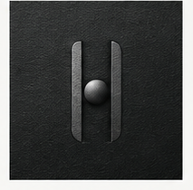
A previous study wandered into new silhouettes (Catch, Menhir, Relic). That is withdrawn. Direction 04’s two members and one suspended sphere are the mark. The shipped construction is a useful baseline — two stadiums, one circle — and it is not frozen just because the math is neat. These six cuts stay extremely simple and one-colour. They only move pillar proportion, slit, sphere, a whisper of taper. One-screen sheet: sheet.html.
Production masters in brand/logos/ are unchanged. Do not resume website work
on the strength of this board.
01 Instrument
Two slender monuments and a large orb in the doorway. Recovered hardware, not a letter H, not a clean-tech helix, not a planet with a glow.
02 Occupancy
Measured from the 04 icon (chrome visible on void): pillar 13, gap 31, sphere Ø 27 — the ball fills ~87% of the slit, 2px hair each side. Inner light is metal. In one colour that mass is fill, not void.
03 Suspension
On the board the orb is centred because it is a 3D object. In one colour a dead-centre ball becomes an H-bar. Keep it held in space, not pasted on a glyph.
04 Word
Canela, thin, inscriptional, cap-height locked to the mark. The type is not a caption for the mark. Fraunces (opsz 144, SOFT 0) is the OFL stand-in. Newsreader is too literary for the lockup.
05 Scale
Logo, 16px favicon, architectural. If a cut is only good at one scale, say so. Direction 02 may inform spacing and negative space — never bloom.
06 Ritual
Monumental, quiet, slightly uncanny. A threshold you could carve in stone or machine from a single billet. Severe enough to keep.

Same 120 viewBox, currentColor, nothing but two members and a sphere.
04 on the left is the source, not a seventh cut.

On void
Construction vs the 04 icon (pillar / gap / fill / height). Baseline 16 · 24 · 92% · 88. Optical 11.5 · 25 · 87% · 92. Suspended = Optical with cy 49. Held 12 · 21.6 · 94% · 92. Slender 10.4 · 25.2 · 87% · 96, cy 53. Threshold = Optical slit, outer foot +2, inner faces parallel, cy 52.
These are resvg pixels, not scaled SVG in the page. 16px is a favicon. If the sphere dies, it dies here.
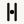
24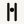
24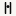
16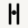
32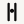
24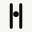
32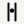
24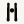
24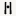
16Four hundred pixels. This is where a neat H becomes a letter on a building, and where a ritual object either holds or looks like a diagram.
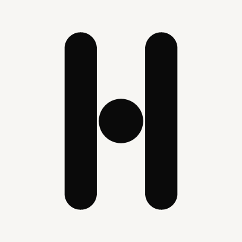
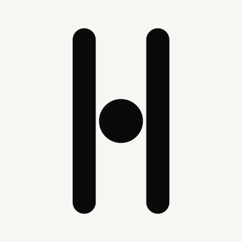
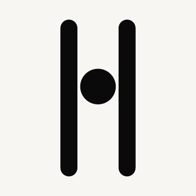
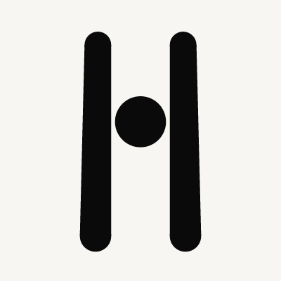
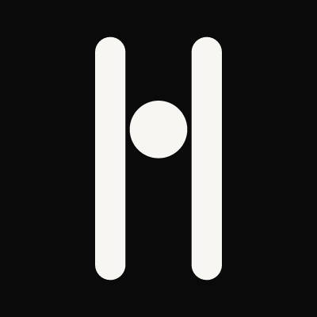
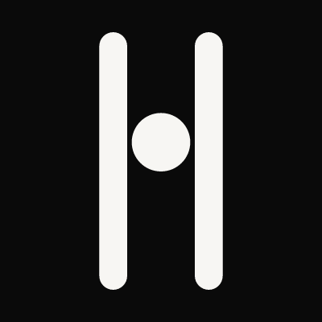
The board that got him is a lockup, not a symbol with a caption. Canela is proprietary. Fraunces at display optical, SOFT 0, is the inscriptional OFL stand-in — high contrast, thin hair, slightly severe. Newsreader remains the body candidate; it is too literary here. Mark height is locked to cap height, gap ~0.42em, the way 04 sits.
04 source
Fraunces · opsz 144, SOFT 0
Baseline’s thick stems fight the hairlines of the word. Slender’s shafts are in the same weight world as the type. That is why 04 feels inseparable.
Newsreader · display optical (site candidate, not the lockup)
Five = strong for that axis. One = fails it. Checkpoint scores, not a freeze. Catch / Menhir / Relic from the earlier zoo are not on this table.
| Archaeological ↔ future | Not an H | Suspended orb | 16px | Monumental | With 04 type | |
|---|---|---|---|---|---|---|
| 0 Baseline | 1 · extruded UI pills | 1 · is the letter | 2 · large, but a crossbar | 5 · survives as H | 2 · a large letter | 2 · stems overpower Canela-weight |
| 1 Optical | 4 · 04’s doorway, one colour | 3 · still a centred bar | 3 · occupancy is right, position is glyph | 3 · thin, readable | 4 · parallel instrument | 4 · shafts match the word |
| 2 Suspended | 3 · hanging, a bit planetary | 5 · cannot be an H | 5 · clearly held in the upper slit | 3 · high bar still reads | 3 · long void below gets loud | 3 · uncanny next to quiet type |
| 3 Held | 2 · tense logo, not an artifact | 2 · tighter counter = more letter | 3 · almost welded | 4 · mass holds | 3 · a clamped H | 3 · heavy beside thin type |
| 4 Slender | 5 · recovered instrument | 4 · lift + needles break the glyph | 5 · in the door, slightly high | 2 · fragile; small-size would thicken later | 5 · two members, one matter | 5 · same weight world as the inscription |
| 5 Threshold | 5 · standing gate | 4 · taper kills the letter | 4 · held, slightly high | 3 · taper vanishes; reads as Optical | 5 · ritual aperture | 4 · a little more costume than 04 |
It preserves Direction 04 better than the shipped baseline because it keeps 04’s actual construction — slender parallel monuments, a large orb occupying ~87% of the slit — and discards the thing that turned that construction into a corporate H: thick letter-stems (16 vs ~11) with the ball glued to the crossbar.
Baseline’s sphere was already large. Shrinking it made a thinner H. The 04 icon on void is the measurement: the chrome inner faces are mass, the remaining doorway is a hair beyond the ball, the members are tall and thin. Slender is that cut, one unit taller, with the orb a whisper above centre so that in one colour it stays an object in a threshold instead of a glyph.
That slight lift is the one-colour compensation for lost metal. It is not Suspended’s jump into the upper third, which at architectural scale starts to read as a planet or a head — Direction 02 language we were told not to borrow. Held tightens the counter and becomes more of a letter, not less. Optical is the 04-literal centred reconstruction; keep it in the room as the fidelity check. Threshold’s whisper foot is the ritual-gate alternate if the parallel stadiums still feel too extruded; it is a step off the board (04’s mono variant is still parallel) and a little more costume beside the word.
Wordmark: Fraunces, opsz 144, SOFT 0 with Slender. The needles and the inscription are one weight. Newsreader for article body only. Do not freeze type until the mark is chosen.
Honest cost: 16px is fragile. A later small-size master can thicken. Do not thicken the display cut to save the favicon.
Production masters in brand/logos/ and the site lockup are unchanged.
This checkpoint is for independent review. Do not merge. Do not start Phase B.